왜 에이전트 팀을 의심하나요
소셜 미디어에는 감독, 개발자, 기획자처럼 업무별로 에이전트를 따로 만들어 굴리면 더 효율적이라는 콘텐츠가 많아요. 발표자의 경험은 반대였어요. 단독 에이전트 하나가 훨씬 나은 때가 많았다고 해요.
근거로 Anthropic 문서를 들어요. 작업이 크지 않으면 에이전트 팀은 오히려 비효율적이고, 순차적인 작업은 메인 Claude 혼자 처리하는 게 낫다는 내용이에요.
왜 쪼갤수록 나빠질까요
발표자가 꼽는 이유는 전화 게임이에요. 아래 화면에서 에이전트 네 마리 밑의 점을 보세요. 왼쪽 첫 에이전트는 점 다섯 개를 다 쥐고 있는데, 한 번 넘길 때마다 줄어서 마지막에는 하나만 남아요. 작은 일까지 역할을 쪼개면 정보를 주고받는 사이에 이렇게 내용이 새어 나가요.

그럼 에이전트 팀이 나은 상황은 정말 없을까요? 발표자는 이걸 확인하려고 같은 과제를 세 가지 설정으로 돌려 봤어요.
세 가지 설정과 첫 과제: 미니 칸반보드
비교한 설정은 세 가지예요. 아래 표의 왼쪽 칸이 그 셋이고, 위쪽이 과제 두 개예요.
- 1번 단일 — Claude 혼자 계획부터 끝까지 해요.
- 2번 에이전트 팀 — 계획부터 보안 리뷰까지 에이전트 다섯이 나눠 맡아요.
- 3번 단일+리뷰어 — 계획과 구현은 메인 Claude가 하고, 코드 리뷰 한 번만 별도 에이전트에게 맡겨요.
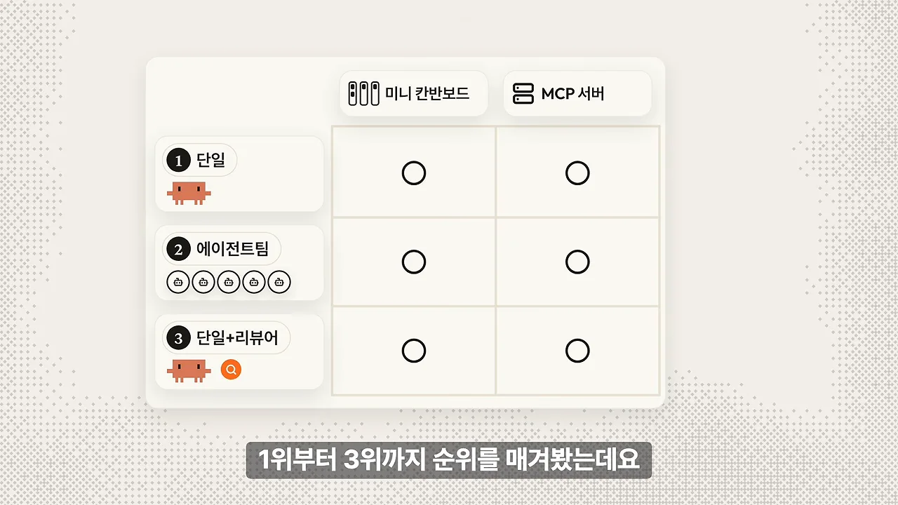
에이전트는 발표자가 임의로 만들지 않았어요. 최대한 똑똑한 팀을 꾸리려고, Anthropic 해커톤 우승자 Affaan Mustafa가 만든 GitHub 저장소 ECC(Everything Claude Code)에서 가져왔어요. 화면 왼쪽 목록 위에 'agents/ 71개'가 보이고, 오른쪽에 뽑아 온 architect, security-reviewer, planner가 붙어 있어요.
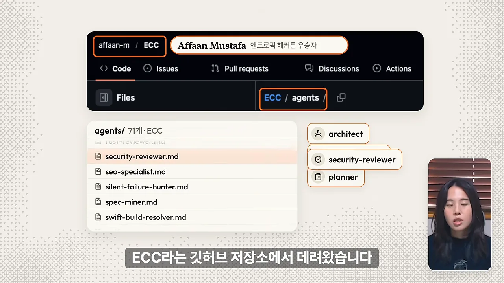
첫 과제: 미니 칸반보드
첫 과제는 팀원들이 업무 상황을 함께 보는 미니 칸반보드예요. 오른쪽 목록이 요구 조건 여섯 가지예요. 회원가입·로그인, 카드 추가·수정·삭제·이동, 재시작해도 데이터 유지, API(Application Programming Interface) 테스트, 남의 카드 수정 차단, 비밀번호 평문 저장 금지. 모델은 셋 다 Sonnet 5.5로 맞췄어요.
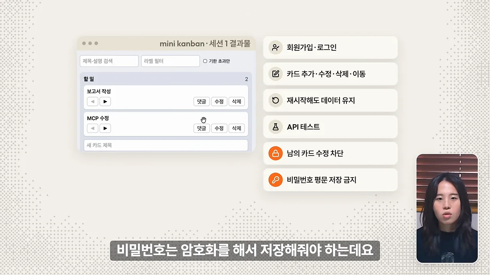
세 세션 모두 요구 기능을 다 만들고 보안 장치도 넣었어요. 그래서 공유나 댓글 같은 기능 네 개를 연달아 더 시켰는데, 이것도 셋 다 해냈어요. 요구 조건을 확인하는 인수 테스트 47개도 셋 다 통과했어요. 차이는 시간과 토큰에서 났어요. 표의 주황색 칸이 에이전트 팀의 39.6분이에요.
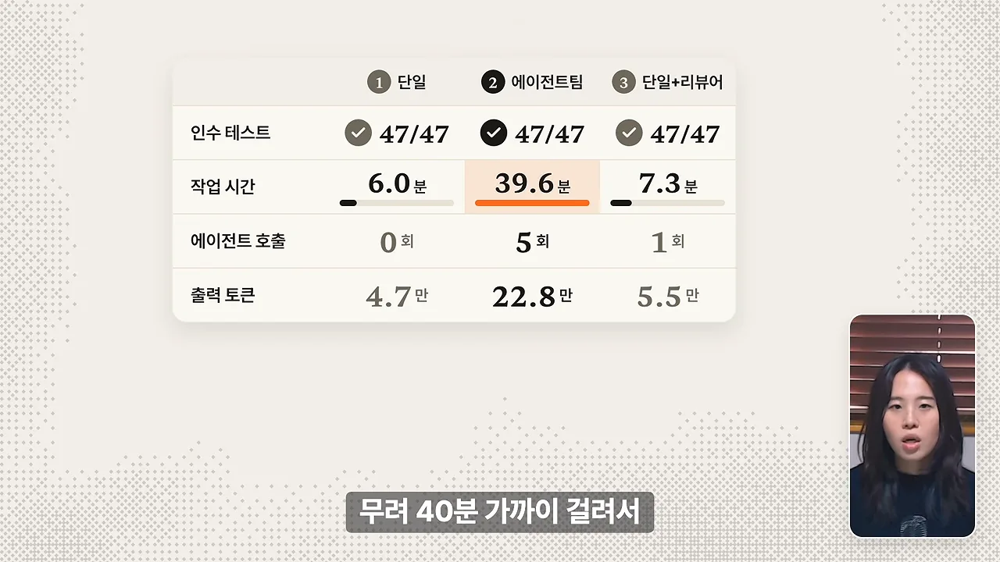
기능이 똑같이 나왔으니 순위는 비용과 시간으로 정했어요. 단일 1위, 단일+리뷰어 2위, 에이전트 팀 3위예요.
실전 과제: MCP 서버 작업 14개
칸반보드는 Claude 혼자도 할 만한 작은 일이라는 반론이 나올 수 있어요. 그래서 발표자는 더 무거운 과제를 준비했어요. 발표자 팀이 실제로 운영하는 입지톡 MCP 서버의 2주치 개발 분량을 과거 코드 시점부터 똑같이 다시 구현하게 한 거예요. 화면에서 왼쪽 카드가 출발점 커밋(a7421d7)이고, 오른쪽 타임라인의 번호 1~14가 2주 동안 들어간 작업이에요.
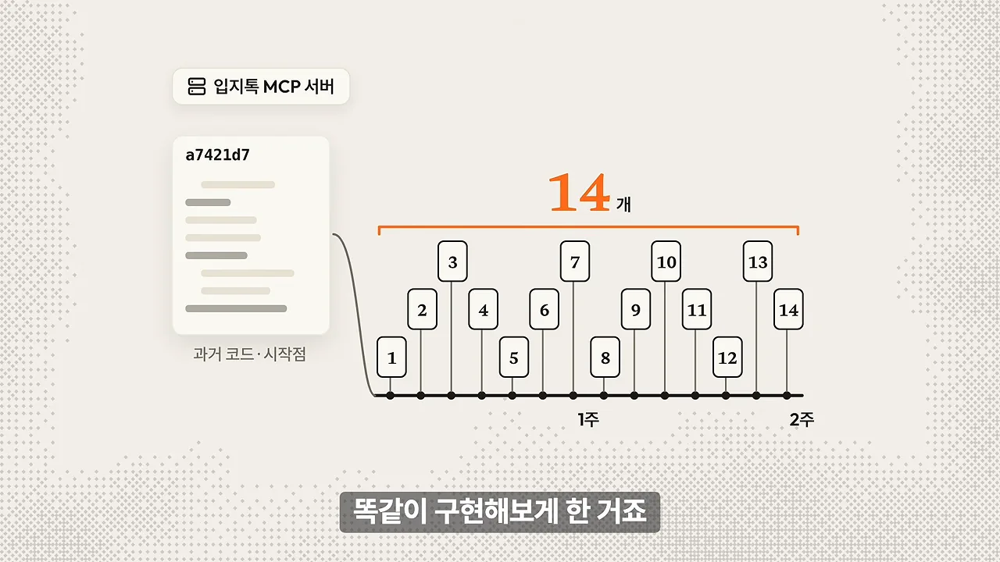
세 세션 모두 Sonnet 5.5로 같은 요청을 받았고, 미리 만든 정답 테스트로 채점했어요. 표의 첫 줄이 핵심 기능 점수(110점 만점)예요. 에이전트 팀 칸에는 '가장 낮음' 표시가 붙어 있고, 오른쪽의 '≈2배'는 출력 토큰 차이를 가리켜요.

에이전트 팀은 구현 담당을 여러 번 부르면서 서브에이전트를 9번 호출했어요. 시간은 단독보다 43분 더 걸렸고, 토큰은 다른 세션의 두 배쯤 썼어요.
단독 세션의 약점은 검수
단독 세션은 시간과 토큰이 가장 적었지만 스스로 검수하지 않아 자잘한 버그가 남았어요. 2인 체제는 어땠을까요. 화면 위쪽 숫자를 보면 단독보다 0.4분, 토큰 2.9만만 더 썼어요. 그 대가로 오른쪽 리뷰어가 버그 5개를 정확히 잡아냈어요.
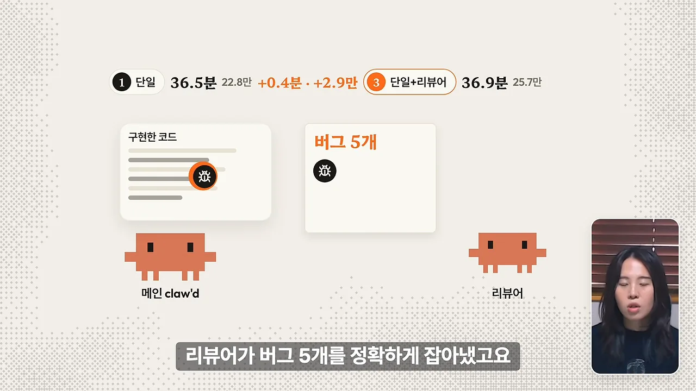
리뷰어 에이전트가 꼭 있어야 하는 건 아니었어요. 단독 세션에서 /code-review 슬래시 명령어를 돌려도 같은 버그를 깔끔하게 잡았어요. 대신 검토가 한 번 더 들어가서 시간과 토큰은 2인 체제와 거의 같아졌어요.
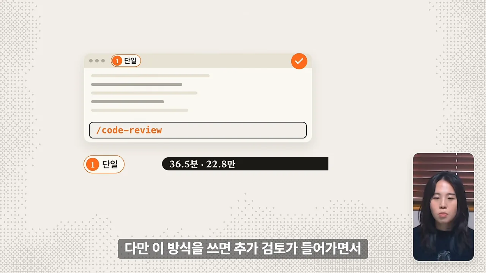
그래서 발표자는 단독+/code-review와 2인 체제를 공동 1위, 에이전트 팀을 2위로 매겼어요. 단독+/code-review 조합의 점수는 따로 보여 주지 않았어요.
모델을 Opus 5.5로 올리면
마지막 실험은 같은 MCP 과제를 Sonnet 5.5가 아니라 Opus 5.5로 돌린 거예요. 이번에는 단독 세션과 에이전트 팀 둘만 비교했어요. 표 오른쪽의 '1.5배'는 작업 시간, '≈'는 점수가 거의 같다는 뜻이고, 맨 아래 막대는 출력 토큰이에요.
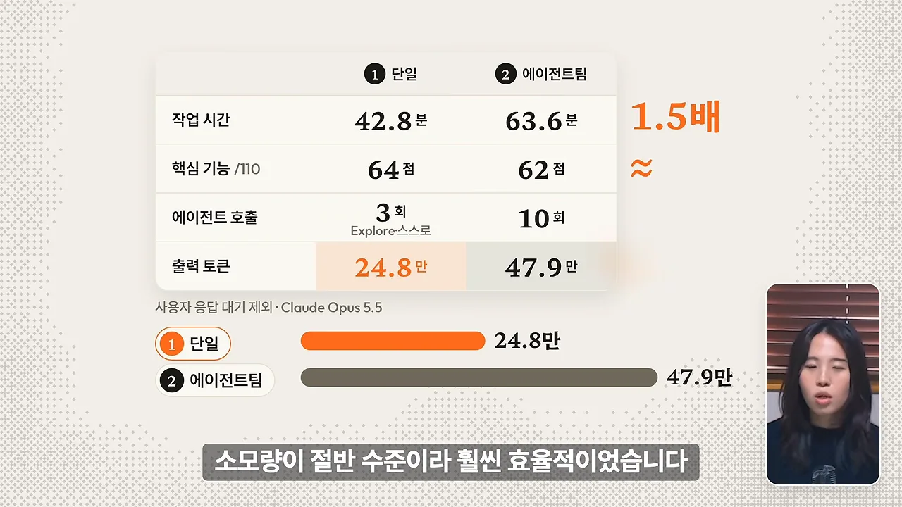
단독 세션은 약 40분, 에이전트 팀은 1시간 남짓 걸렸어요. 점수는 64점과 62점으로 크게 다르지 않았고, 비용과 직결되는 출력 토큰은 단독이 절반 수준이었어요.
단독 Opus는 알아서 에이전트를 불렀어요
표의 '에이전트 호출' 줄에서 단독 세션도 3회예요. 시키지 않았는데 단독 Opus가 계획 단계에서 탐색 에이전트 3개를 스스로 불렀거든요. 화면처럼 src/tools/, src/trades/, src/map/ 폴더를 하나씩 맡겨 코드를 나눠 읽었어요.

결과는 단독 1위, 에이전트 팀 2위였어요.
종합 결과와 에이전트를 쓸 때·안 쓸 때
Sonnet으로 돌린 두 테스트를 합친 최종 순위예요. 막대 오른쪽 숫자가 작업 시간, 아래 작은 숫자가 출력 토큰이에요.
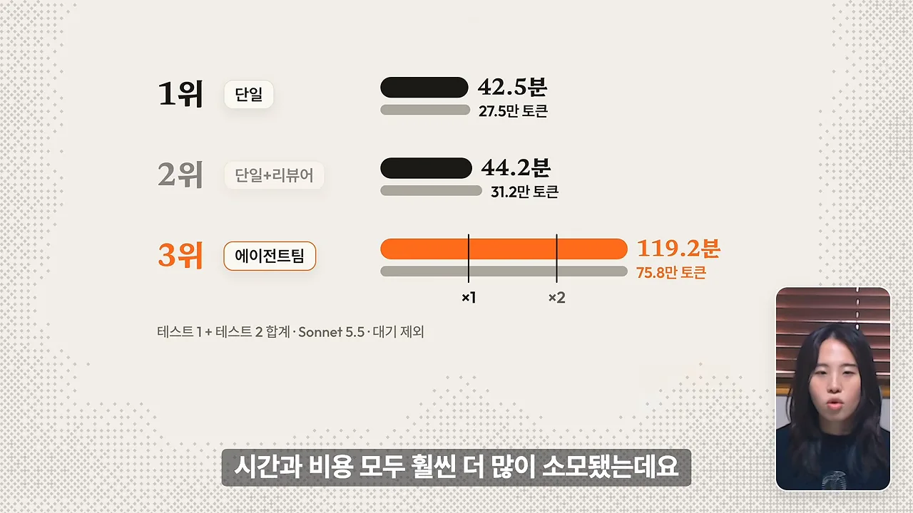
단독은 약 40분, 에이전트 팀은 약 두 시간이 걸렸고 토큰도 두세 배를 썼어요. 단계마다 문서를 따로 쓰고 같은 코드를 여러 번 읽느라 출력 토큰과 시간이 불어났다는 게 발표자의 설명이에요.
아래 그림은 세 실험의 작업 시간을 한 축에 모은 거예요. 에이전트 팀 막대는 과제가 커지든 모델이 바뀌든 매번 가장 길어요. 단독과 단독+리뷰어는 거의 붙어 있어요.
화면에 띄운 문서가 발표자가 처음에 말한 Anthropic 글이에요. 밑줄 친 부분은 스킬을 갖춘 단일 에이전트가 서브에이전트 설계보다 자주 나았다는 문장이에요. 발표자는 이 경고가 실험 데이터로 확인됐다고 정리해요.
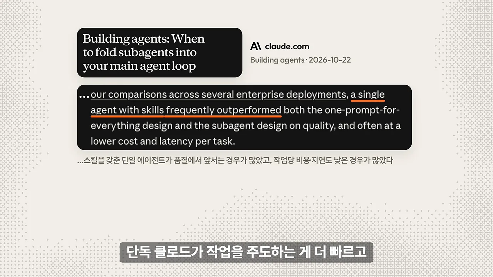
에이전트가 값을 하는 순간
그렇다고 에이전트가 늘 쓸모없다는 건 아니에요. 발표자의 말로는 핵심이 얼마나 많이가 아니라 언제예요. 화면 위쪽 세 항목이 에이전트를 쓰기 좋은 때예요.
- 독립 코드 리뷰 — 구현이 끝난 뒤에 해요. 직접 짠 코드를 스스로 볼 때 놓치는 버그를 새 시각이 잡아요.
- 넓은 코드베이스 조사 — 먼저 넓게 훑어야 할 때예요. Opus 5.5가 스스로 탐색 에이전트를 부른 게 그 예예요.
- 병렬 작업 — 서로 독립된 기능을 각자 만들거나, 여러 관점의 리뷰를 동시에 돌릴 때예요.
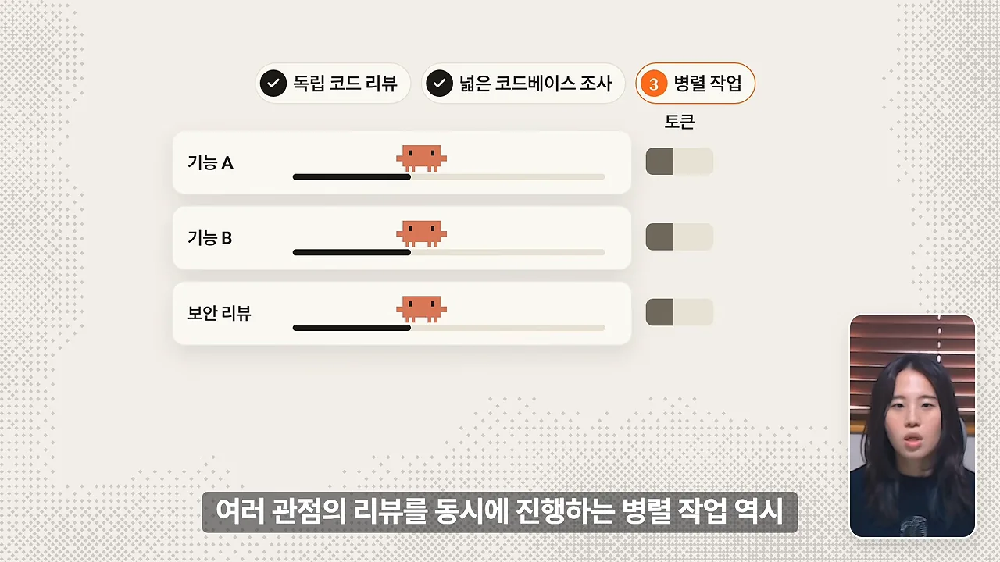
다만 에이전트 수만큼 토큰도 같이 늘어난다는 점은 미리 따져 봐야 해요.
단일 Claude가 나은 순간
오른쪽 주황 상자가 단일 세션이 나은 때예요. 계획·구현·테스트가 하나로 이어지는 맥락, 작고 빠른 수정, 속도가 중요할 때, 대화하듯 다듬을 때예요. 이럴 때는 단일 세션이 가장 빠르고 비용도 적게 들었어요.
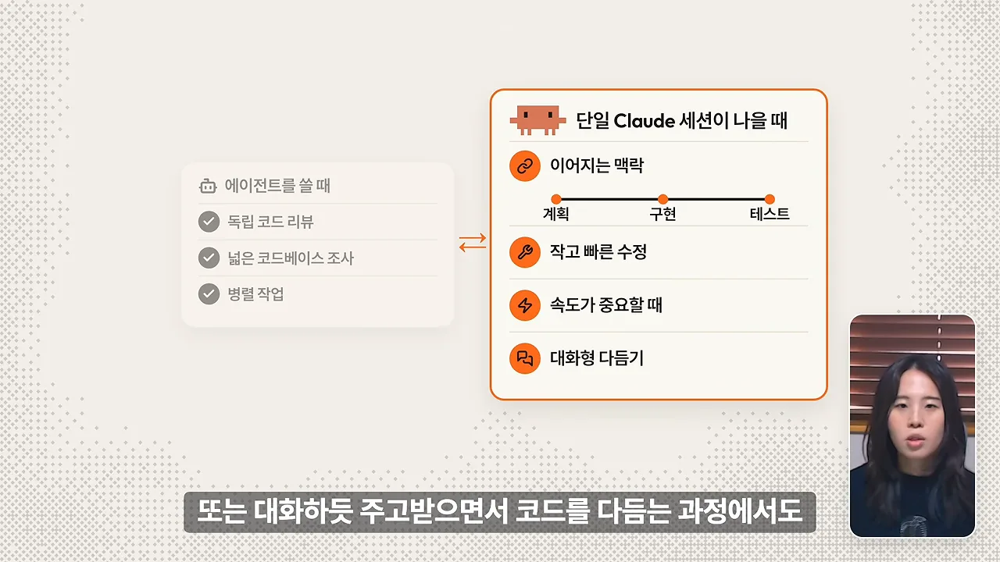
두 목록을 한 표로 모으면 이래요.
| 에이전트를 부를 때 | 단일 Claude에 맡길 때 |
|---|---|
| 구현이 끝난 뒤 독립 코드 리뷰 | 계획·구현·테스트가 한 맥락으로 이어지는 작업 |
| 넓은 코드베이스를 먼저 조사할 때 | 작고 빠른 수정, 속도가 중요할 때 |
| 독립 기능 구현, 여러 관점 리뷰를 동시에 돌리는 병렬 작업 | 대화하듯 주고받으며 코드를 다듬을 때 |
플러그인은 필요한 에이전트만 불러요
마지막 조언은 ECC 같은 플러그인을 쓰는 법이에요. 화면 왼쪽의 rules/에 그어진 X는 에이전트 규칙을 통째로 설치하지 말라는 뜻이고, 오른쪽 상자는 구현을 마친 뒤 직접 부르라는 뜻이에요. 예를 들어 code-reviewer 같은 검증용 에이전트만 골라 프롬프트로 부르는 식이에요.
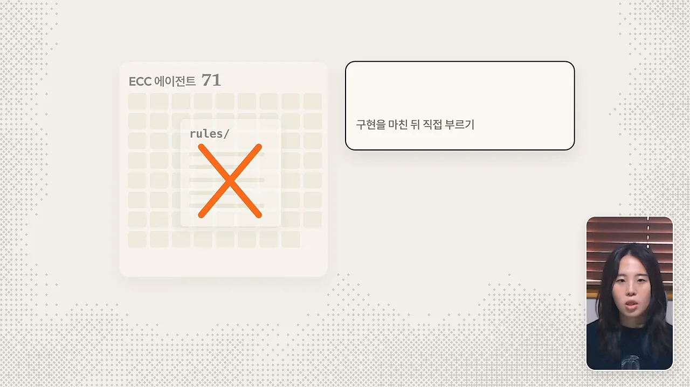
정리하면, 복잡한 에이전트 파이프라인을 짜기보다 단일 세션의 속도에 핀포인트 에이전트를 조합하라는 게 발표자의 결론이에요.
무작정 에이전트 파이프 라인을 복잡하게 구축하기보다는 단일 세션의 속도와 안정적인 핀포인트 에이전트를 조합해서 사용하는 것을 추천을 드립니다.
— 영상 08:20